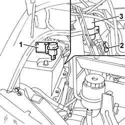
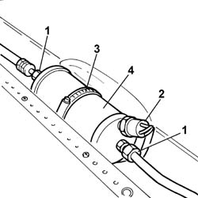

5040A44 AIR CONDITIONER DEHYDRATING FILTER/ACCUMULATOR - R+R
- Path
- Procedures > 50 AUXILIARY UNITS > 5040 AIR CONDITIONING CASING AND COMPONENTS > 5040A CHECKING OPERATION OF AIR CONDITIONER (TEMPERATURE) > 5040A44 AIR CONDITIONER DEHYDRATING FILTER/ACCUMULATOR - R+R
- Kind
- repair procedure (removal / refitting; the operation number is the code)
- Applies to
- all engines; all production periods
- Interactive page
- https://sloeber94.github.io/elrnDB-fDct/en/#/244001270
Applies to: all engines; all production periods
 Removing
Removing
 Refitting
RefittingOp. 0010T84 COOLANT FOR AIR CONDITIONING SYSTEM DEHYDRATE AND RECHARGE
- Disconnect the negative battery terminal.
1. Undo the nuts fixing the inertia sensor mounting bracket and move it aside.
2. Undo the bolts fixing the filter inlet and outlet pipes.
- Move the inlet and outlet pipes away from the drier filter.
3. Undo the bolt securing the drier filter mounting bracket.
4. Open the mounting bracket and remove the drier filter.

Applies to: all engines; all production periods
Refitting
Removing- Secure the filter inside the mounting bracket, tightening the bolt to the actual bracket.
- Connect the inlet and outlet pipes to the drier filter, tightening the bolts.
- Fasten the inertia sensor mounting bracket.
- Connect the negative battery terminal.
Op. 0010T84 COOLANT FOR AIR CONDITIONING SYSTEM DEHYDRATE AND RECHARGE
Applies to: all engines; all production periods; only with equipment: Supplementary air conditioner
Removing
Refitting